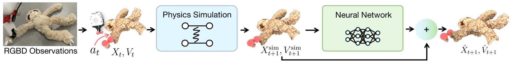

新论文 · 日期 2026-07-15 · score 18 · cs.RO
作者：Saurabh Gupta, Niklas Trekel, Louis Wiesmann, Cyrill Stachniss
评分 9.5/10
LiDAR SLAM位姿图ICP信息矩阵回环闭合地图一致性
一句话工作总结：以几何相关 ICP 信息矩阵加权里程计，并在图优化后追溯挖掘漏检回环，直接优化重访区域地图一致性。
高质量地图是机器人导航与规划的基础，但较低的轨迹误差并不必然带来几何一致的地图，尤其在重访区域，漏检回环与残余漂移会造成局部错位。本文提出一套同时改善全局轨迹和局部地图质量的图优化 LiDAR SLAM 框架：高效估计与场景几何相关的 ICP 信息矩阵，对位姿图中的里程计约束进行原则化加权；以分层回环模块解耦地点识别和几何配准；再利用优化后的位姿图追溯恢复早先漏检的回环。作者还提出重访区域地图一致性评测协议。多数据…
High-quality maps are fundamental for robotics tasks such as navigation and planning. Although modern graph-based LiDAR SLAM systems achieve good trajectory accuracies, a low trajectory error alone does not gu…

新论文 · 日期 2026-07-15 · score 12 · cs.RO
作者：Phu Pham, Damon Conover, Aniket Bera
评分 8.6/10
主动三维重建多机器人视点规划强化学习3DGS
一句话工作总结：用共享 PPO 在融合团队地图上分配互补视点，以增量重建反馈联合优化覆盖、发现、重叠与避碰。
多智能体主动三维重建容易因重复观测和空间聚集浪费有限的感知预算。COLMAR 将视点分配建模为基于地图中心观测的共享策略优化，并设计面向重建质量的目标，联合鼓励考虑重叠的覆盖、团队级新区域发现和安全避碰。训练使用参数共享 PPO，以增量重建更新产生稠密反馈；部署时各智能体基于融合团队地图独立选取动作，无需为决策进行智能体间通信。最终视点由 3D Gaussian Splatting 重建并进行光度评测。在 GLEA…
Active 3D reconstruction requires selecting informative viewpoints under limited sensing budgets. In multi-agent settings, coordination inefficiencies such as redundant observations and spatial clustering can…

新论文 · 日期 2026-07-15 · score 11 · cs.CV, cs.LG
作者：Josiane Uwumukiza, Jocelyn Zhao, Giovanni Lavezzi, Giacomo Battaglia
评分 8/10
6-DoF 位姿单视图重建2D–3D 匹配PnP航天器导航
一句话工作总结：从单图重建未知航天器点云，以 DINOv3、图卷积和双流 Transformer 建立 2D–3D 对应后用 PnP 恢复位姿。
面向未知航天器的自主交会，DreamSat-Pose 从单张图像同时建立目标形状并估计相对 6-DoF 位姿。系统先重建目标三维点云，再由冻结的 DINOv3 提取图像特征、可训练动态图卷积编码器提取几何特征；双流 Transformer 通过交替自注意力和交叉注意力细化描述子，输出软 2D–3D 对应，最后交由 PnP 求解位姿。SPE3R 数据集实验以 FoundationPose 为代表基线，论文报告对未见航…
6-DoF pose estimation is a critical task in autonomous rendezvous and proximity operations. In the case of an unknown target, this task becomes challenging as it shall be paired with the reconstruction of the…

新论文 · 日期 2026-07-15 · score 9 · cs.CV, cs.GR
作者：Lei Yang, Weiqing Li, Zhiyong Su, Liang Xiao
评分 7.8/10
神经隐式重建SDF表面重建不确定性曲率自适应
一句话工作总结：以像素级不确定性课程调节单目先验监督，并按局部曲率调整 SDF 密度锐度，兼顾室内平面与细结构。
室内场景同时包含大面积弱纹理平面和高频细薄结构，统一监督强度与全局 SDF-to-density 映射难以兼顾平滑和细节。CASA-SDF 通过两类互补适配解决这一矛盾：混合空间自适应不确定性退火融合语义与光度不确定性，为单目先验监督建立像素级课程，在可靠区域保持正则、早期减弱不可靠先验；曲率感知局部自适应密度变换则以曲率代理渐进调节 SDF-to-density 映射锐度，增强细结构表达。室内 benchmark…
Neural implicit representations have emerged as a powerful paradigm for 3D reconstruction. However, high-fidelity indoor surface reconstruction remains a significant challenge, primarily due to the pronounced…
新论文 · 日期 2026-07-16 · score 7 · cs.RO
作者：Zhiyun Deng, Luis Sentis
评分 9/10
GNSS 拒止UAV 定位卫星地图DEM语义筛选EKF
一句话工作总结：先校正 UAV—卫星图像的尺度和偏航，再结合 DEM、OSM 语义、PnP 与延迟状态 EKF 完成 GNSS 拒止连续定位。
AeroMap3D 面向 GNSS 拒止环境，将机载单目图像锚定到卫星影像、DEM 和 OpenStreetMap 先验。轻量适配器先估计 UAV 图像与地图瓦片间的尺度比和偏航差，消除高度、视场角和航向引起的主要跨视角错位，再调用无需微调的预训练稠密匹配器。系统把二维对应提升到 DEM 地形，并用 OSM 语义剔除受未建模建筑高度和倾斜结构影响的匹配，随后通过 RANSAC-PnP 求位姿；延迟地图位姿再与相对运…
We present AeroMap3D, a monocular 6-DoF UAV localization system that anchors onboard imagery to visual, geometric, and semantic map priors for GNSS-denied navigation. AeroMap3D addresses two fundamental challe…
新论文 · 日期 2026-07-15 · score 7 · cs.CV, cs.GR
作者：Neel Kelkar, Simon Niedermayr, Kaloian Petkov, Klaus Engel
评分 7.6/10
3DGSSurfel纹理图集实时渲染模型压缩
一句话工作总结：把高频纹理从 surfel 外观中解耦并烘焙到紧凑纹理图集，以稀疏裁剪实现最高五倍 3DGS 加速和 4K 实时渲染。
本文将低频几何与视角相关外观交给二维 surfel 表示，把高频、视角无关纹理存入空间哈希网格并烘焙为紧凑纹理图集，从而避免渲染阶段昂贵的哈希网格查询。半透明和单基元 falloff 的稀疏化约束可积极裁剪不重要 surfel；结合几何稀疏性和 GPU 纹理映射，方法相对 3DGS 最高加速五倍，同时保持先进视觉质量，并在消费级硬件上实现 4K 60 FPS 实时渲染。
Recent extensions of 3D Gaussian Splatting (3DGS) capture fine color details using hash-grid-based appearance parameterization but incur high computational cost during fragment rendering. We introduce a decoup…

新论文 · 日期 2026-07-15 · score 7 · cs.RO, cs.AI, cs.CV
作者：Shivansh Patel, Kaifeng Zhang, Sanjay Pokkali, Svetlana Lazebnik
评分 6.4/10
可变形物体残差动力学物理引导学习MPC3DGS
一句话工作总结：以可优化弹簧—质量模型提供物理主干，再学习时序残差，服务可变形物体预测、MPC 操作和 3DGS 交互仿真。
PGRD 将可优化弹簧—质量仿真器作为物理骨干，并由神经网络学习对物理预测的残差修正。方法采用基于速度的稳定形式和滑动窗口 Transformer 捕获时间依赖，在多种真实可变形物体上优于纯物理与纯学习基线。作者进一步将模型用于基于 MPC 的操作规划，包括语言条件目标图像；还以 3D Gaussian Splatting 进行动作条件视频预测和交互式仿真。
Simulating deformable objects is essential for a wide range of robotic manipulation applications, yet accurately predicting their dynamics remains challenging. We propose Physics-Guided Residual Dynamics (PGRD…